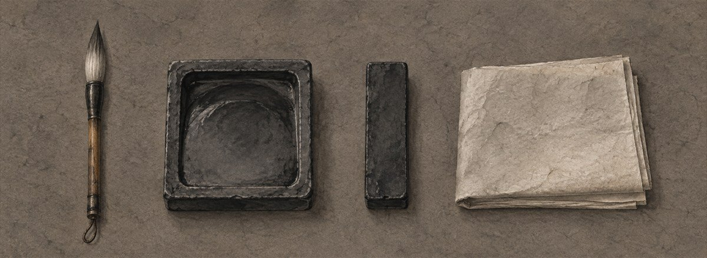
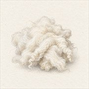
염소털
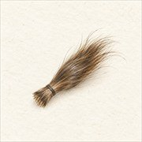
족제비꼬리털
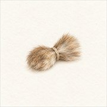
청설모꼬리털
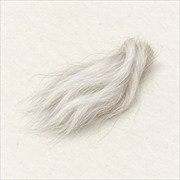
너구리털
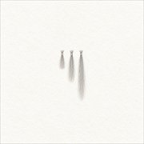
토끼털
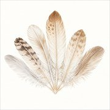
노루털
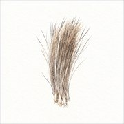
돼지털
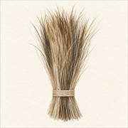
사슴털
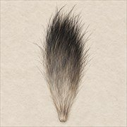
소털
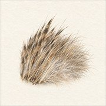
말털
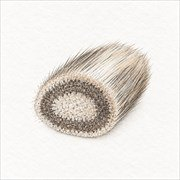
개털
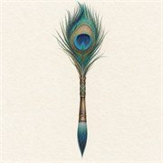
쥐수염
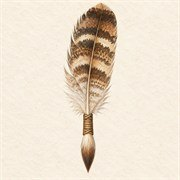
아이의 첫 머리카락을 보관한 기념 재료
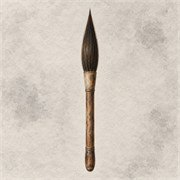
깃대가 아닌 부드러운 동물털 혼합
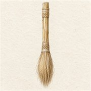
닭털
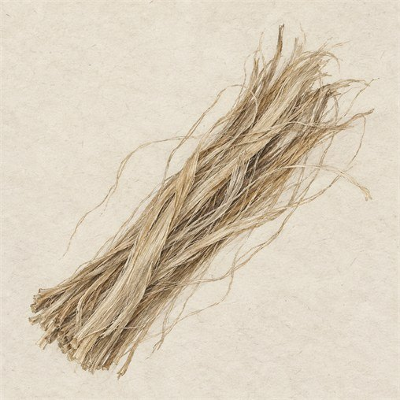
칡뿌리
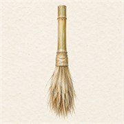
대나무
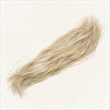
볏짚
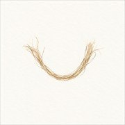
갈대
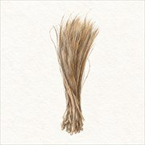
띠풀
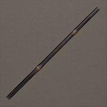
대나무 필관 — 신우대·마디대·오죽대
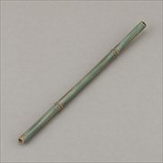
목재 필관 — 피나무·박달나무·자작나무
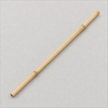
금
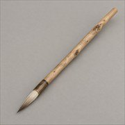
은
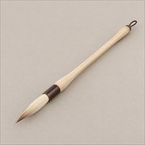
동
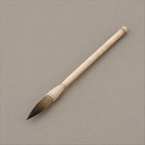
옥
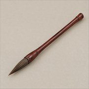
도자
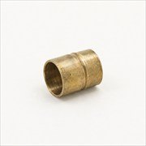
상아
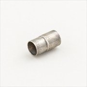
소뿔
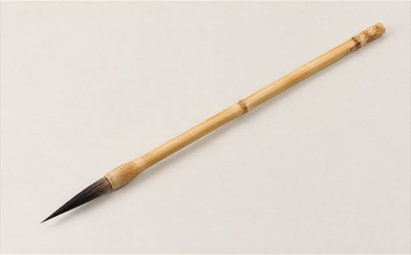
한글필은 끝의 움직임이 또렷하도록 날렵하게 모으고, 획을 부드럽게 잇기 위한 중간 정도의 탄성을 갖춥니다.
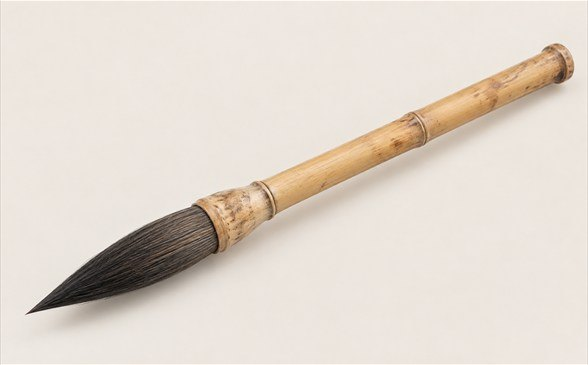
한문필은 눌러 쓰는 동작을 받칠 수 있도록 붓촉을 넉넉하고 두툼하게 만듭니다. 한문 서예에서 폭넓게 쓰이는 형식입니다.
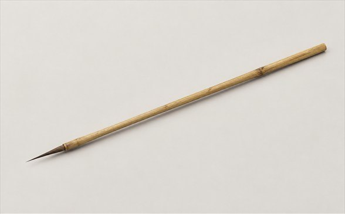
면상필은 끝을 매우 가늘게 모아 인물의 눈썹이나 머리카락처럼 끊김 없는 세선을 그립니다. 적은 먹을 균일하게 내보내도록 붓촉의 굵기를 정밀하게 맞춥니다.
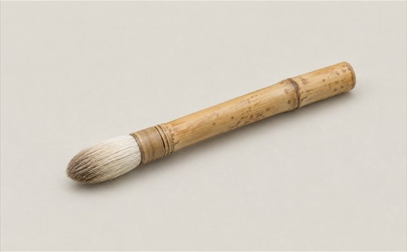
채색필은 색을 고르게 머금도록 짧고 둥글게 만들며, 반복해서 칠해도 모양이 돌아오도록 탄성을 높입니다.
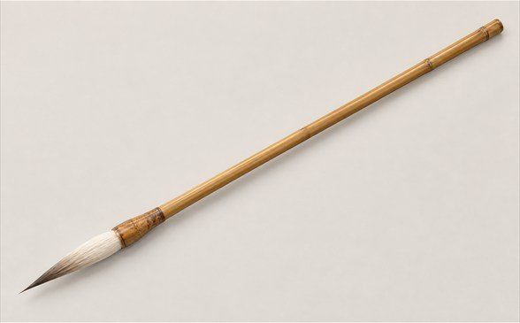
사군자필은 긴 필관과 붓촉으로 큰 움직임을 만들며, 끝은 예리하고 되돌아오는 힘은 단단한 편입니다.
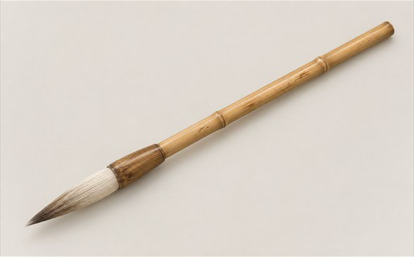
문인화필은 사군자필보다 짧고 힘이 좋으며, 완만하게 모인 털끝이 마지막에는 가늘게 닫히는 모양입니다.
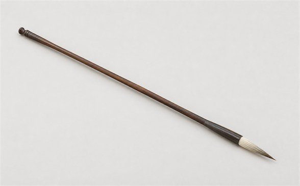
장봉은 긴 붓촉이 충분한 먹을 품어 큰 글자와 이어지는 선을 만들기 좋습니다. 필압을 크게 바꾸는 행초서나 넓은 화면 작업에서 움직임을 길게 가져갈 수 있습니다.
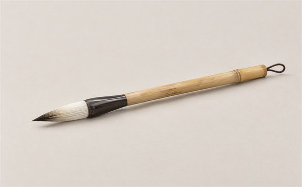
중봉은 길이와 탄성의 균형이 무난해 글씨와 문인화를 두루 연습하기 좋습니다. 처음 쓰는 사람도 붓끝의 움직임을 비교적 안정적으로 느낄 수 있습니다.
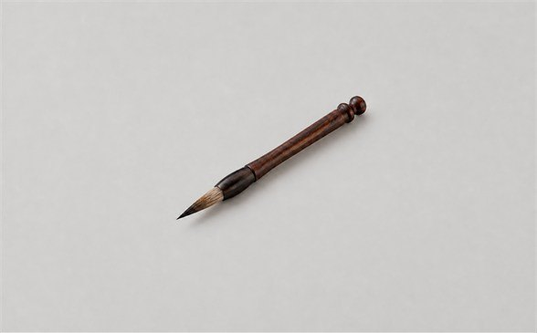
단봉은 짧은 붓촉이 쉽게 휘지 않아 작은 글자와 세부 묘사에 유리합니다. 각이 분명한 획이나 짧게 끊는 동작을 안정적으로 표현합니다.